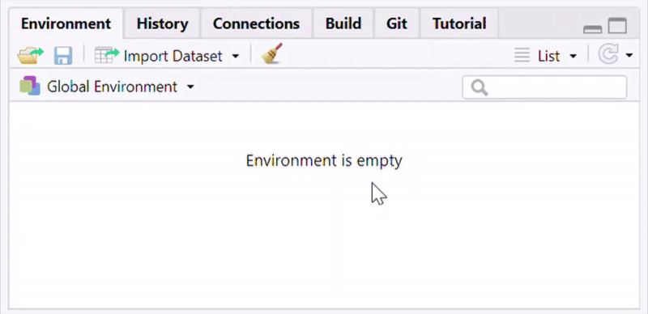

About this package
primer.tutorials provides the tutorials used in the Primer for Bayesian Data Science.
Installation
You can install the development version from GitHub with:
# install.packages("remotes")
remotes::install_github("PPBDS/primer", subdir = "primer.tutorials")For suggested updates during installation, though you do not have to have the latest versions of packages, it is recommended you update them. For packages that need compilation, feel free to answer “no”.
Then restart your R session or restart RStudio.
Accessing tutorials
In order to access the tutorials, start by loading the package.
You can access the tutorials via the Tutorial pane in the top right tab in RStudio.
If any of the following is happening to you- Cannot find the Tutorial pane
- Cannot find a tutorial called “Getting Started”
Then remember to restart your R session after installing the package.
Click “Start tutorial”. If you don’t see any tutorials, try clicking the “Home” button – the little house symbol with the thin red roof in the upper right.

In order to expand the window, you can drag and enlarge the tutorial pane inside RStudio. In order to open a pop-up window, click the “Show in New Window” icon next to the home icon.
You may notice that the Jobs tab in the lower left will create output as the tutorial is starting up. This is because RStudio is running the code to create the tutorial. If you accidentally clicked “Start Tutorial” and would like to stop the job from running, you can click the back arrow in the Jobs tab, and then press the red stop sign icon. Your work will be saved between RStudio sessions, meaning that you can complete a tutorial in multiple sittings. Once you have completed a tutorial, follow the instructions on the tutorial Submit page and (if you’re a student) submit the downloaded rds file as instructed.
Working environments and repo setup
The primary supported environment is VS Code on GitHub Codespaces, started from the PPBDS/codespace-starter devcontainer. The tutorial text is written assuming this setup. R, Quarto, and all the dependencies are installed in the container, so there is nothing to install on your own machine. Two local alternatives — Positron and VS Code running on your own machine — are supported but require you to install R, Quarto, and the tutorial packages yourself.
Before you start any exercise tutorial, create a GitHub repo named after that tutorial. Use the tutorial’s name, not its number — nhanes, trains, colleges, biden, shaming, nes, ces, governors, stops. The repo should be empty: do not check the “Add a README” box, do not add a .gitignore, do not add a license. The tutorial walks you through creating those files once you’re inside the repo.
Starting a tutorial on Codespaces (primary)
Go to PPBDS/codespace-starter, click Use this template → Create a new repository, and name the new repository after the tutorial you’re about to do (e.g. nhanes). Leave all the optional boxes unchecked — you want an empty copy of the template, not one with a README/gitignore/license added on top. Once the repo is created, open it in a Codespace from the Code → Codespaces button on the repo page. The dev container boots with R and Quarto already configured; proceed to Exercise 2 of the tutorial inside that Codespace.
Starting a tutorial locally (Positron or VS Code)
If you prefer to work on your own machine, install R, Quarto, and primer.tutorials (see the Installation section above). Then create an empty GitHub repo named after the tutorial (no README, no .gitignore, no license), clone it to your machine with your usual workflow (File → New Folder from Git in Positron; git clone followed by opening the folder in VS Code), and open the repo in your editor. Proceed to Exercise 2.
Regardless of mode, by the time you reach Exercise 2 you should be sitting inside an empty repo whose name matches the tutorial.
Re-installation
Since these tutorials are constantly being updated, it is likely that updates will come out as you use these tutorials.
If you wish to stay up-to-date with the latest version, it is recommended that you regularly re-install this tutorial package by running the following 2 lines of code in your R Console:
remove.packages("primer.tutorials")
remotes::install_github("PPBDS/primer", subdir = "primer.tutorials")For version updates for dependency packages please follow the same considerations as discussed above in the Installation section.
And remember to RESTART YOUR R SESSION after you re-installed the package.